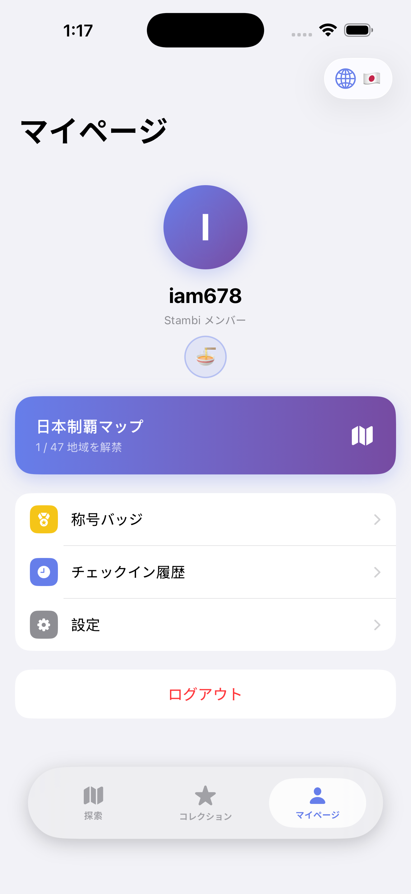
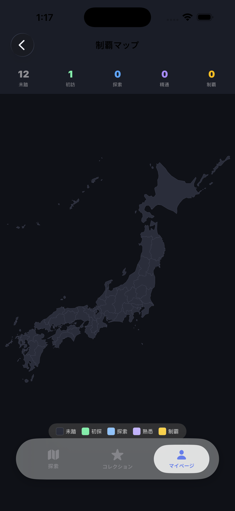
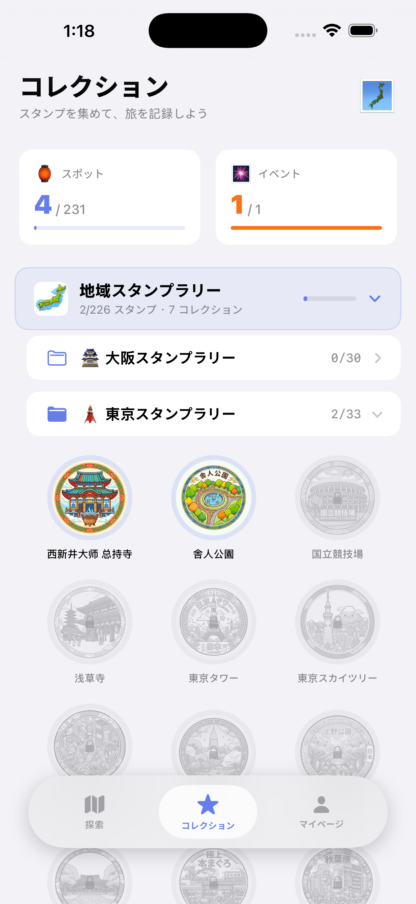
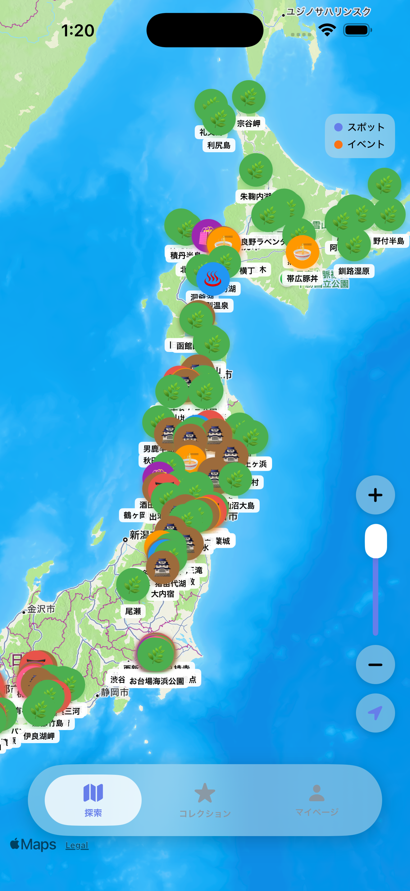
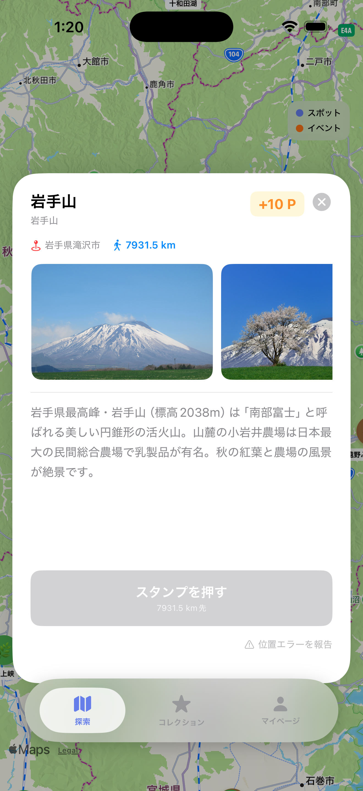

Stambiは、実際にその場所を訪れてスタンプを集める新感覚の旅行記録アプリ。47都道府県を巡り、あなただけの旅の軌跡を刻もう。
スタンプを集めながら、日本の魅力を再発見しよう
全国の観光地・神社・絶景・グルメスポットがマップ上に表示。気になる場所を見つけて足を運ぼう。
スポットから300m以内に近づくとチェックイン可能。その場所に「行った」証が、あなただけのスタンプになる。
「日本三景」「東京名所」など、テーマ別コレクション。全スタンプを集めると特別な称号バッジを獲得。
訪れた都道府県が地図上でカラーリング。日本全国を制覇する達成感をぜひ味わって。
「京都初探」「世界遺産収蔵家」など旅スタイルに合わせた称号を獲得。プロフィールに最大5つ表示できる。
日本語・中文・Englishに対応。日本に住む方にも、旅行で訪れる方にも使いやすい設計。
シンプルで直感的なデザイン

探索マップ

チェックイン

スタンプ収集

47都道府県マップ

マイページ
Stambi 是一款地图打卡与印章收集旅行应用，帮助你探索日本各地景点，记录每一次旅行的足迹。
边旅行边收集印章，重新发现日本之美
全国神社、绝景、美食、建筑等景点全在地图上显示，找到感兴趣的地方直接导航前往。
距离景点 300 米以内即可打卡，每一枚印章都是你真实到访的证明。
「日本三景」「东京打卡地」「京都名所」等主题系列，集齐全套解锁特别称号徽章。
走过的都道府县在地图上逐渐上色，一眼看出你的日本旅行足迹。
解锁「京都初探者」「世界遗产收藏家」等称号，最多展示 5 枚在个人页面。
支持中文、日文、英文切换，无论是旅游还是定居日本，都能顺畅使用。
Stambi is a map-based stamp collection app where you visit real locations to earn stamps and build your travel legacy across Japan.
Discover Japan one stamp at a time
Browse shrines, scenic spots, food spots, and landmarks across Japan on an interactive map.
Get within 300 meters of a spot to check in. Each stamp is proof that you were really there.
"Three Views of Japan", "Tokyo Highlights", "Kyoto Classics" and more. Complete them all for exclusive badges.
Color in each prefecture as you visit. Watch your map of Japan come to life.
Earn badges like "Kyoto Explorer" and "World Heritage Collector". Display up to 5 on your profile.
Available in Japanese, Chinese, and English — perfect for both residents and visitors to Japan.
Stambi is currently under App Store review.
Download will be available very soon!